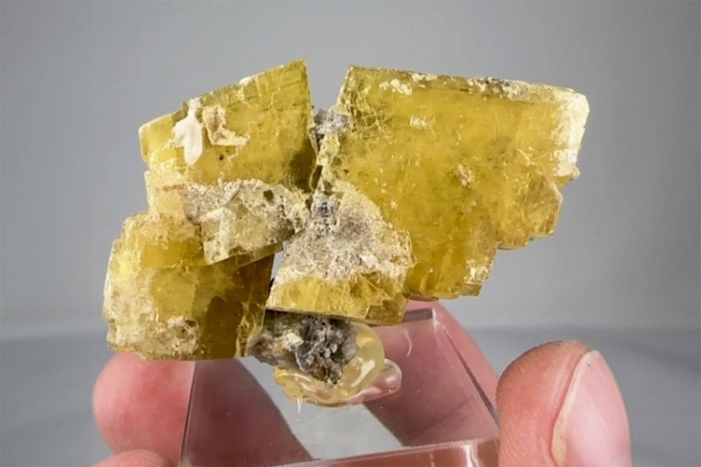

Barite
"Saturated Golden Barite Crystals"
VI-10570
Sherman Tunnel Upper Iowa Gulch, Mount Sherman, Leadville, Lake County, Colorado
ex Ken Kucera collection
Purchased 6/22/2026 from Persson Rare Minerals for $81.68
Core Collection • In Collection
Details
Storage Type: Drawer
Storage Location: C1D2 The Reserve Miniatures
Size class: TBD (0)
Dimensions: Unrecorded
Mass: Unrecorded
Luster: Unrecorded